kazahana は、Bluesky の軽量デスクトップクライアントアプリです。このマニュアルでは、各画面の名称と機能について解説します。
対応バージョン: kazahana v1.4.1アプリを起動すると、ログイン画面が表示されます。
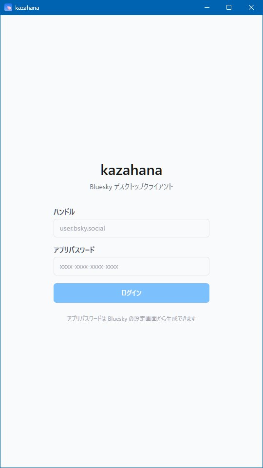
| 項目 | 説明 |
|---|---|
| ハンドル | Bluesky のハンドルを入力します（例: user.bsky.social） |
| アプリパスワード | Bluesky で生成したアプリパスワードを入力します（形式: xxxx-xxxx-xxxx-xxxx） |
| ログインボタン | 入力した情報でログインを実行します |
画面下部の「アプリパスワードは Bluesky の設定画面から生成できます」のリンクから、Bluesky のアプリパスワード設定ページにアクセスできます。
ヒント: kazahana ではアカウントの通常パスワードではなく、Bluesky の設定画面で発行する「アプリパスワード」を使用します。
ログイン後の各画面は、共通のレイアウトで構成されています。
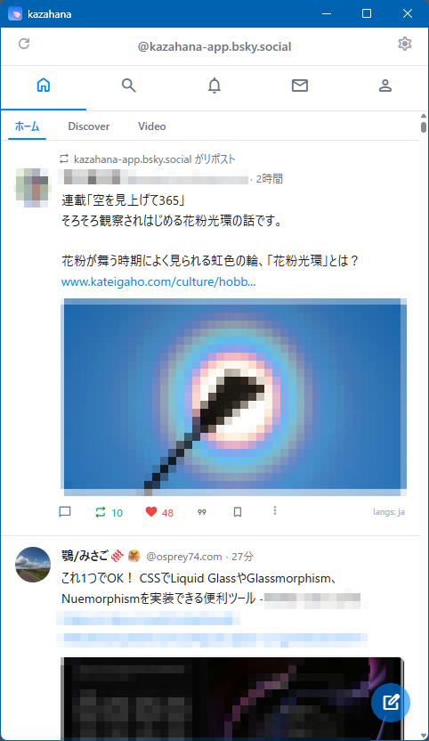
画面最上部に表示されます。アプリ名「kazahana」と、ウィンドウ操作ボタン（最小化・最大化・閉じる）が配置されています。
| 位置 | 要素 | 説明 |
|---|---|---|
| 左 | リロードボタン | タイムラインを手動で更新します |
| 中央 | ハンドル表示 | ログイン中のアカウントのハンドルが表示されます |
| 右 | 設定アイコン（⚙） | 設定画面を開きます |
ユーザーバーの下に、5つのアイコンが横並びで表示されます。各アイコンをクリックすると対応する画面に切り替わります。
| アイコン | 画面 | 説明 |
|---|---|---|
| 🏠 | ホーム | タイムラインを表示します |
| 🔍 | 検索 | ユーザーや投稿を検索します |
| 🔔 | 通知 | いいね・リポスト等の通知を表示します |
| ✉️ | ダイレクトメッセージ | DM の会話一覧を表示します |
| 👤 | プロフィール | 自分のプロフィールを表示します |
未読のダイレクトメッセージがある場合、✉️ アイコンに赤い数字のバッジが表示されます。
画面右下に常時表示される青い丸ボタンです。クリックすると新規投稿画面が開きます。また、タイムライン表示中に「n」キーを押下することでも新規投稿画面が開きます。
ナビゲーションバーの 🏠 アイコンで表示される画面です。フォロー中のユーザーの投稿が時系列で表示されます。
| タブ | 説明 |
|---|---|
| ホーム | フォロー中のユーザーの投稿を表示します（常時表示） |
| Discover | おすすめの投稿を表示します（表示/非表示を設定可能） |
| Video | 動画投稿を表示します（表示/非表示を設定可能） |
表示するフィードタブは、設定画面からカスタマイズできます。
| 要素 | 説明 |
|---|---|
| リポストラベル | リポストされた投稿の場合、上部に「○○ がリポスト」と表示されます |
| アバター | 投稿者のプロフィール画像です。クリックで投稿者のプロフィール画面を開きます |
| 表示名・ハンドル | 投稿者の表示名とハンドル（@xxx）が表示されます |
| 経過時間 | 投稿からの経過時間（「27分」「2時間」「2日」など）が表示されます |
| 投稿本文 | テキスト、リンク、ハッシュタグなどが表示されます |
| 画像サムネイル | 投稿に画像が含まれる場合、サムネイルが表示されます |
| リンクカード | 投稿に URL が含まれる場合、OGP 情報（サムネイル・タイトル・説明文）がカード形式で表示されます |
| 言語ラベル | 投稿の言語が右下に表示されます（例: langs: ja） |
| クライアント名 | 設定で有効にしている場合、投稿元のクライアント名（例: via kazahana）が表示されます |
各投稿カードの下部に、操作アイコンが横並びで表示されます。
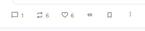
| アイコン | クリック時の動作 | 数字の表示 | 数字クリック時の動作 |
|---|---|---|---|
| 💬 返信 | 返信の作成画面を開く | あり | ―（一覧表示なし） |
| 🔁 リポスト | 即座にリポストを実行 | あり | リポストした人の一覧を表示 |
| ♡ いいね | いいねを付ける／取り消す | あり | いいねした人の一覧を表示 |
| 「99」引用 | ポップアップメニューを表示 | ― | ― |
| 🔖 ブックマーク | 投稿をブックマークに保存／解除 | ― | ― |
| ⋮ メニュー | その他の操作メニューを開く | ― | ― |
「99」引用アイコンをクリックすると、以下のメニューが表示されます。
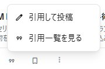
| 項目 | 説明 |
|---|---|
| 引用して投稿 | 引用リポストの作成画面を開きます |
| 引用一覧を見る | この投稿を引用した投稿の一覧を表示します |
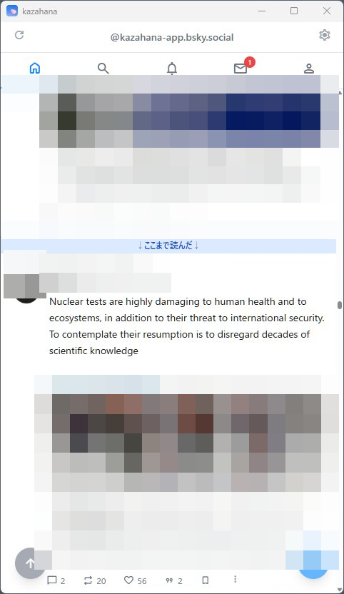
タイムライン上に「↓ここまで読んだ↓」と書かれた青い横バーが表示されます。前回閲覧した位置を示しており、どこまで読んだかが一目でわかります。
タイムラインを下にスクロールすると、画面左下に青い丸ボタン（↑矢印アイコン）が表示されます。クリックするとフィードの先頭に戻ります。
ナビゲーションバーの 🔍 アイコンで表示される画面です。
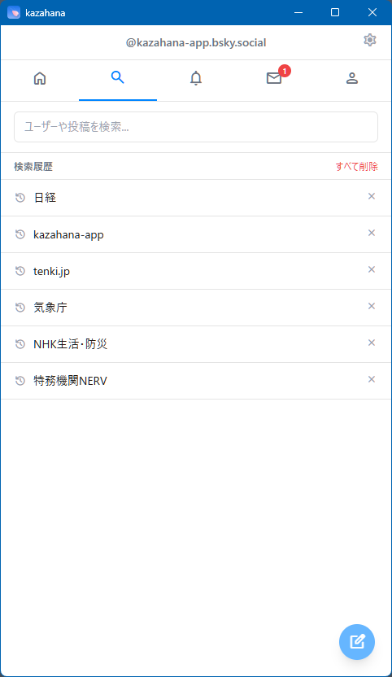
| 要素 | 説明 |
|---|---|
| 検索入力フィールド | 「ユーザーや投稿を検索...」と表示されます。テキストを入力して Enter で検索を実行します |
| 検索履歴 | 過去の検索キーワードが一覧表示されます |
| 個別削除（×） | 各履歴の右側の × ボタンで個別に削除できます |
| すべて削除 | 右上のリンクで検索履歴を一括削除できます |
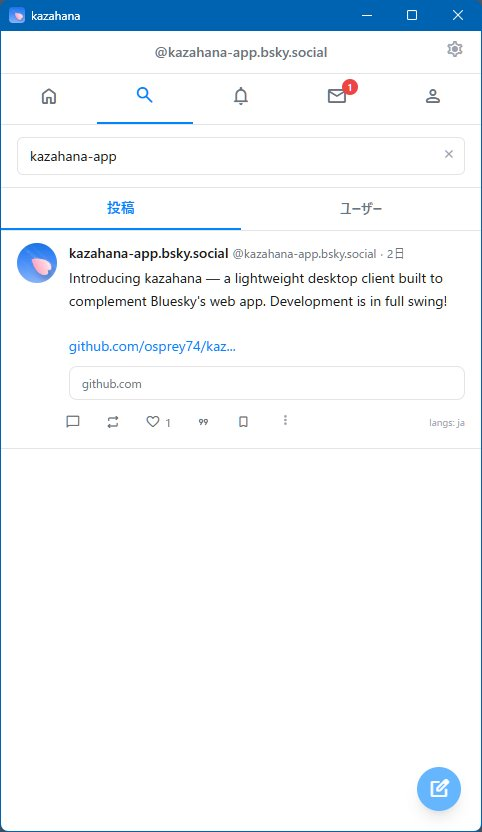
検索を実行すると、結果が「投稿」「ユーザー」の2つのタブで表示されます。
| タブ | 説明 |
|---|---|
| 投稿 | 検索キーワードに一致する投稿がカード形式で表示されます（デフォルト） |
| ユーザー | 検索キーワードに一致するユーザーが一覧表示されます |
検索入力フィールドの右側にある × ボタンで、入力をクリアして初期画面に戻れます。
ナビゲーションバーの 🔔 アイコンで表示される画面です。

新しい通知が時系列で上から一覧表示されます。各通知には、アクションの種類・実行したユーザーの情報・対象の投稿プレビュー・経過時間が含まれます。
| アイコン | 種類 | 内容 |
|---|---|---|
| ❤️ | いいね | 自分の投稿がいいねされた |
| 💬 | 返信 | 自分の投稿に返信があった |
| 👤 | フォロー | 自分のアカウントがフォローされた |
| 🔁 | リポスト | 自分の投稿がリポストされた |
| 「99」 | 引用 | 自分の投稿が引用リポストされた |
| @ | メンション | 他のユーザーの投稿で自分が言及された |
ナビゲーションバーの ✉️ アイコンで表示される画面です。
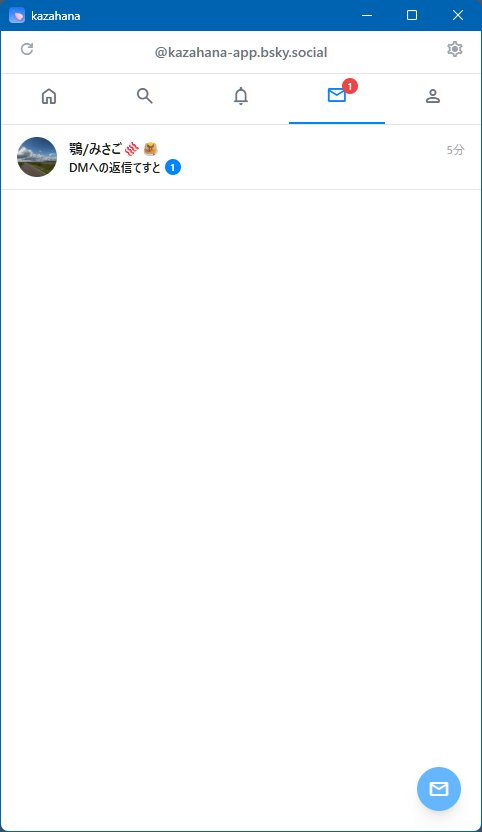
| 要素 | 説明 |
|---|---|
| アバター・表示名 | 会話相手のプロフィール情報です |
| 最新メッセージプレビュー | 最新のメッセージの冒頭が表示されます |
| 経過時間 | 最新メッセージの経過時間です |
| 未読バッジ | 未読メッセージがある場合、緑色の丸に件数が表示されます |
会話をクリックするとスレッド（個別のやり取り画面）が開きます。
画面右下の青い丸ボタン（✉ アイコン）をクリックすると、新しい DM の会話を開始できます。
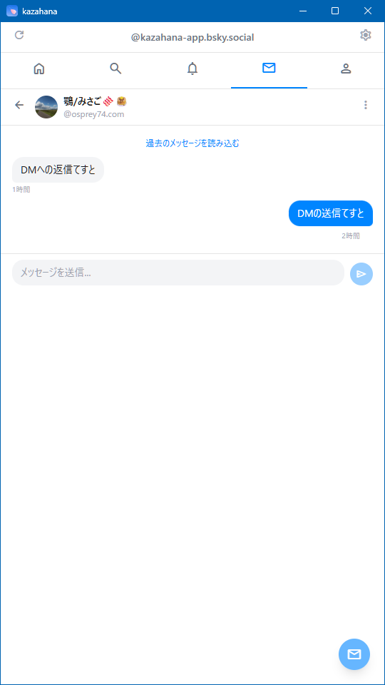
| 要素 | 説明 |
|---|---|
| ← 戻るボタン | 会話一覧に戻ります |
| 相手の情報 | アバター・表示名・ハンドルが表示されます |
| ⋮ メニュー | その他の操作メニューを開きます |
| 過去のメッセージを読み込む | クリックすると、さらに古いメッセージを取得します |
| メッセージ表示エリア | 相手のメッセージは左寄せ・グレー背景、自分のメッセージは右寄せ・青背景の吹き出しで表示されます。各メッセージの下に経過時間が表示されます |
| メッセージ入力エリア | テキストを入力し、右側の送信ボタン（▶）でメッセージを送信します |
ナビゲーションバーの 👤 アイコンで自分のプロフィールが表示されます。他ユーザーのアバターや表示名をクリックした場合は、そのユーザーのプロフィールが表示されます。
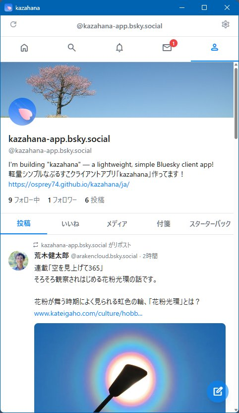
| 要素 | 説明 |
|---|---|
| バナー画像 | 画面上部の背景画像です |
| アバター | 丸型のプロフィール画像です |
| 表示名・ハンドル | アカウントの表示名とハンドルです |
| 自己紹介（Bio） | プロフィールの自己紹介文とリンクです |
| フォロー中 | クリックでフォロー中ユーザーの一覧を表示します |
| フォロワー | クリックでフォロワーの一覧を表示します |
| 投稿数 | 投稿の総数です（クリック非対応） |
| タブ | 説明 |
|---|---|
| 投稿 | 自分の投稿・リポストの一覧です |
| いいね | 自分がいいねした投稿の一覧です |
| メディア | 画像・動画を含む投稿のみ表示します |
| 付箋 | ピン留めした投稿の一覧です |
| スターターパック | 自分が作成したスターターパックの一覧です |
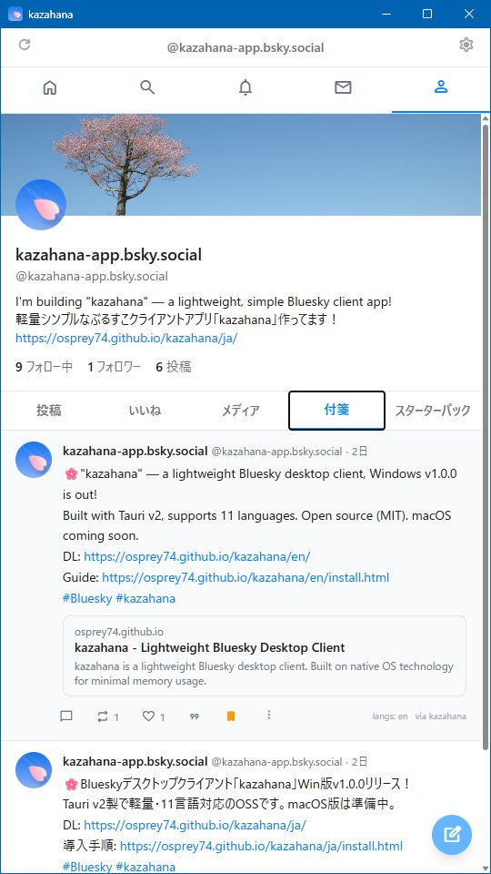
他ユーザーのプロフィールでは、バナー画像の右下にフォロー操作ボタンが表示されます。
未フォロー時:
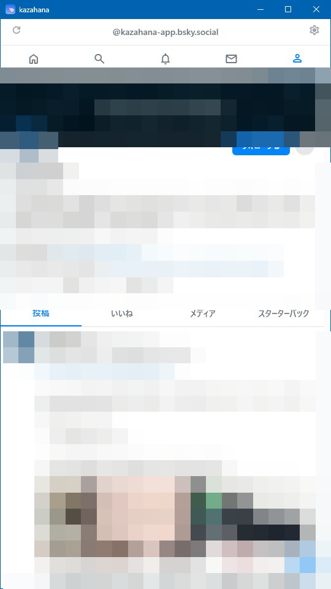
「フォローする」ボタン（青背景）が表示されます。クリックでフォローします。
フォロー中:
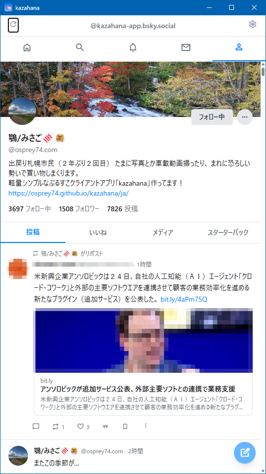
「フォロー中」ボタン（白背景）が表示されます。クリックでフォローを解除します。
| 項目 | 説明 |
|---|---|
| リストに追加／削除 | ユーザーをリストに追加または削除します |
| ミュートする | ユーザーをミュートします |
| ブロックする | ユーザーをブロックします |
| このユーザーを通報 | ユーザーを通報します |
補足: 他ユーザーのプロフィールでは、コンテンツタブに「付箋」タブは表示されません。
プロフィール画面の「フォロー中」「フォロワー」をクリックすると、それぞれの一覧画面が表示されます。

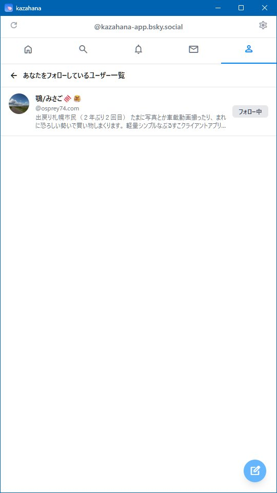
各ユーザーの情報として、アバター・表示名・ハンドル・Bio の冒頭が表示されます。
| 画面 | 右側の表示 |
|---|---|
| フォロー中一覧 | 相手が自分をフォローしているかどうかの状態ラベル |
| フォロワー一覧 | 「フォロー中」ボタン（フォロー済みの場合） |
画面右下の新規投稿ボタン（FAB）をクリックすると、投稿作成画面がモーダルで表示されます。
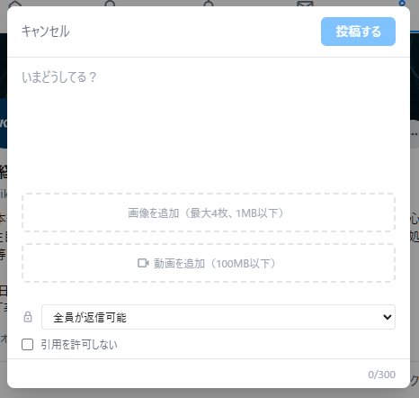
| 要素 | 説明 |
|---|---|
| キャンセル | 投稿を中止してモーダルを閉じます |
| 投稿するボタン | 投稿を実行します。また、Alt+エンターキーの押下でも投稿を実行できます |
| テキスト入力エリア | 投稿本文を入力します。プレースホルダーは「いまどうしてる？」です |
| 文字数カウンター | 右下に現在の文字数と上限が表示されます（0/300） |
| 画像を追加 | 画像ファイルを選択して添付します（最大4枚、1MB以下） |
| 動画を追加 | 動画ファイルを選択して添付します（100MB以下） |
| 返信範囲の設定 | 「全員が返信可能」のドロップダウンで、返信できるユーザーの範囲を設定します |
| 引用を許可しない | チェックを入れると、この投稿の引用リポストを禁止します |
タイムラインや検索結果で投稿カードをクリックすると、投稿の詳細画面が表示されます。
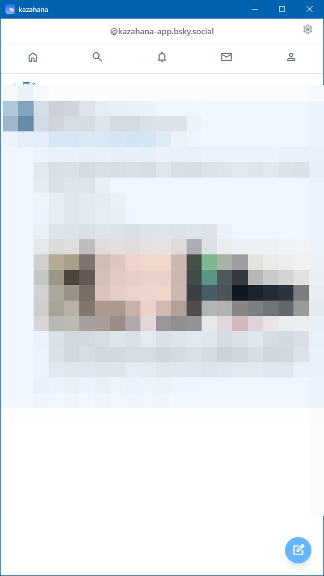
「← 戻る」ボタンで前の画面に戻ります。タイムライン上では省略されていた投稿本文が全文表示され、リンクカードや画像も展開されます。アクションバーも同様に操作可能です。
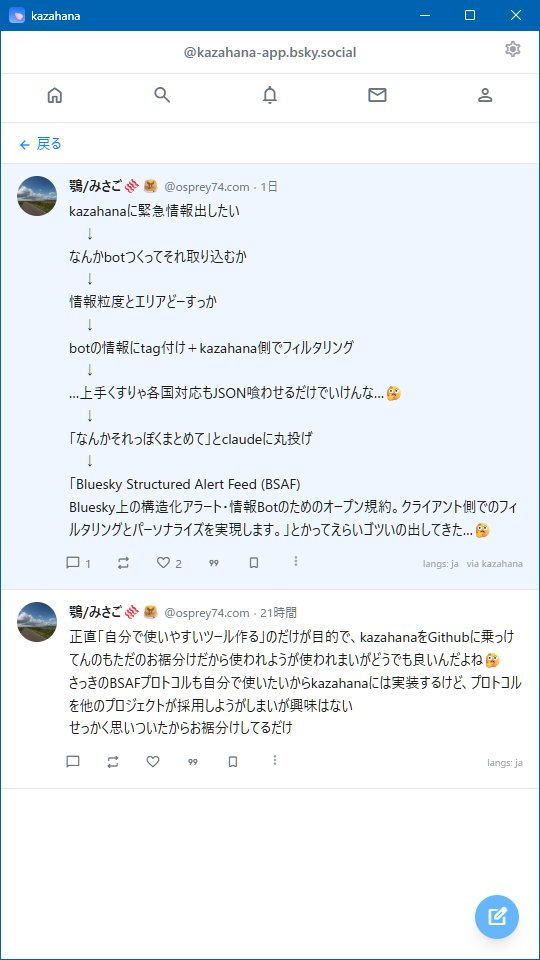
返信がある投稿では、元の投稿の下にスレッド形式で返信が時系列に表示されます。各返信も通常の投稿カードと同じレイアウトで表示されます。
ユーザーバー右端の ⚙ アイコンをクリックすると、設定画面が表示されます。
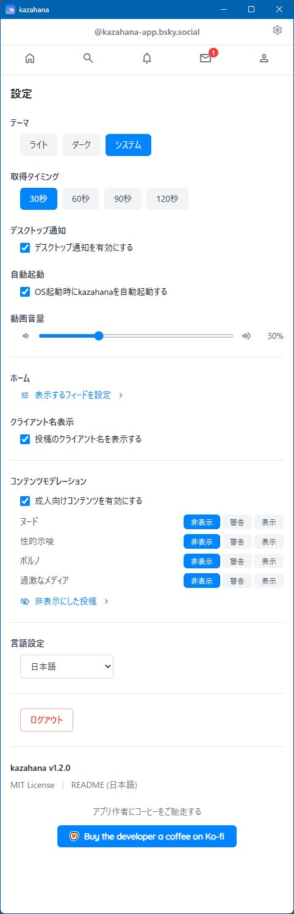
| 選択肢 | 説明 |
|---|---|
| ライト | 明るい配色で表示します |
| ダーク | 暗い配色で表示します |
| システム | OS の設定に連動して自動で切り替えます |
タイムラインの自動更新間隔を設定します。「30秒」「60秒」「90秒」「120秒」から選択できます。
「デスクトップ通知を有効にする」のチェックボックスで、OS のデスクトップ通知による新着通知の受け取りを切り替えます。
「OS 起動時に kazahana を自動起動する」のチェックボックスで、パソコン起動時の自動起動を切り替えます。
閉じる（✕）ボタンをクリックした際の動作を選択します。「アプリを終了する」（デフォルト）または「タスクトレイに最小化する」を選べます。タスクトレイに最小化した場合、プログラムを終了するにはタスクトレイのアイコンを右クリックし「Exit」を選択してください。
スライダーで動画再生時の音量を調整します（0〜100%）。
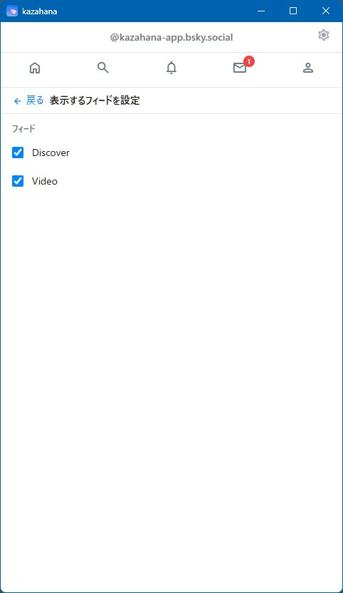
「表示するフィードを設定 >」をクリックすると、フィード設定画面が表示されます。自分がフォローしているフィードがチェックボックス付きで一覧表示され、ON/OFF でホーム画面のフィードタブへの表示を切り替えられます。
補足: 「ホーム」タブは常時表示されるため、この一覧には含まれません。
「投稿のクライアント名を表示する」のチェックボックスを有効にすると、各投稿の右下に投稿元のクライアント名（例: via kazahana）が表示されます。
| 項目 | 説明 |
|---|---|
| 成人向けコンテンツを有効にする | チェックボックスで有効/無効を切り替えます |
| カテゴリごとの設定 | 「ヌード」「性的示唆」「ポルノ」「過激なメディア」の各カテゴリについて、「非表示」「警告」「表示」の3段階で表示レベルを設定できます |
「非表示にした投稿 >」をクリックすると、モデレーションにより非表示となった投稿の一覧を確認できます。
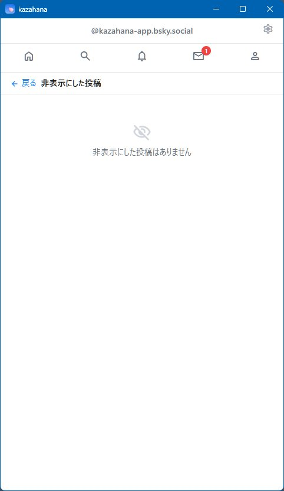
ドロップダウンでアプリの UI 言語を切り替えます。
「ログアウト」ボタンをクリックすると、現在のアカウントからログアウトし、ログイン画面に戻ります。
| 項目 | 説明 |
|---|---|
| バージョン | 現在のアプリバージョン（例: kazahana v1.4.0） |
| MIT License | ライセンス情報へのリンクです |
| README | アプリの README ページへのリンクです |
| Buy the developer a coffee on Ko-fi | 開発者への支援（寄付）リンクです |
ブックマークレットを使うと、ブラウザで閲覧中のページのタイトルと URL をワンクリックで kazahana の投稿画面に送ることができます。リンクカード（OGP プレビュー）も自動生成されます。
ブラウザのブックマークバーが表示されている場合、以下のボタンをそのままドラッグ＆ドロップで追加できます。
ドラッグ＆ドロップが使えない場合は、以下のコードをコピーし、ブックマークの手動作成時に URL 欄に貼り付けてください。
javascript:void(function(){var t=encodeURIComponent(document.title),u=encodeURIComponent(location.href);window.open('kazahana://compose?title='+t+'&url='+u,'_self')})()Ctrl+Shift+B で切り替え）。kazahana に共有 と入力し、URL 欄に上記のブックマークレットコードを貼り付けます。Ctrl+Shift+B、または 表示 → ツールバー → ブックマークツールバー）。kazahana に共有 と入力し、URL 欄にブックマークレットコードを貼り付けます。Cmd+Shift+B）。kazahana に共有 に変更します。注意: ブックマークレットを使用するには、お使いのパソコンに kazahana がインストールされている必要があります。kazahana がインストールされていない場合、クリックしても何も起こりません。